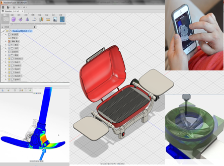
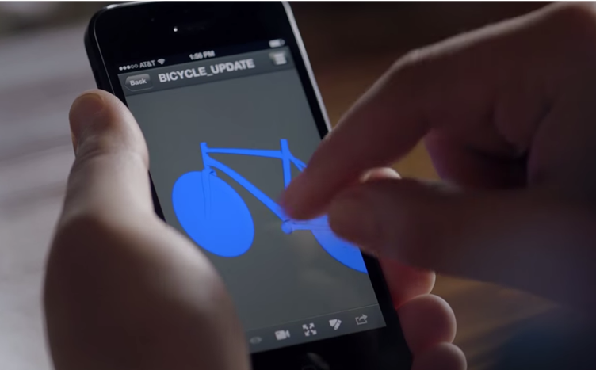
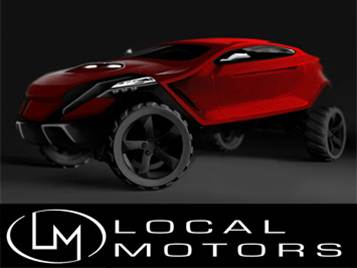
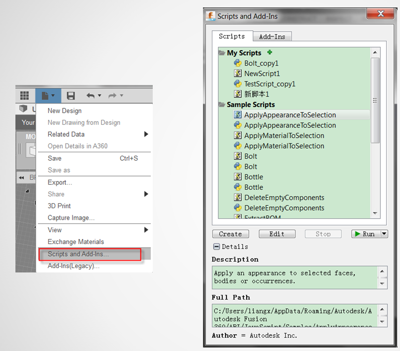
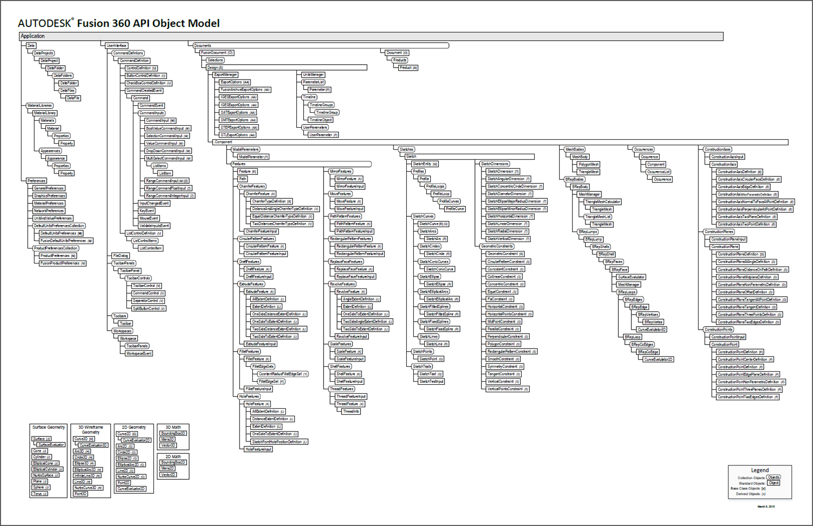
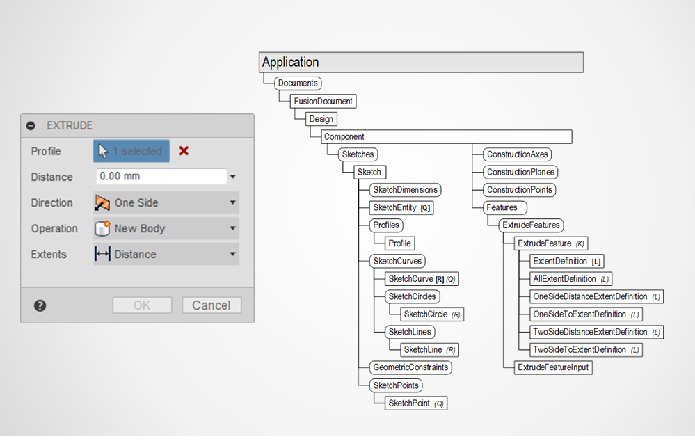
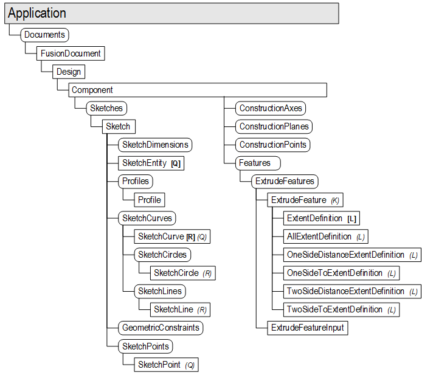

Fusion 360 API 入门
梁晓冬
开发顾问
DevTech中国区经理
内容
- Fusion 360 简介
- API 概览
- Javascript API
- Python API
- 插件
三维设计的新需求
来看一个视频
注：广告都是浮云
Fusion 360
基于云，从概念设计到成品的三维CAD/CAM协作设计平台 
新时代的设计概念

设计可以如此

谁在用

- 公路赛车
- Local Motors

API拓展?
Fusion API - 目前是客户端的API
- 脚本
- 插件

脚本与插件管理器
API 演化过程
- 2014年9月引入Javascript 脚本形式
- 2014年11月引入Python脚本形式
- 2015年3月推出插件形式
- 未来计划推出C++的方式
- 多编程语言的背后是单一的API
- 为每种编程语言包装了接口
- 面向对象层级结构
- API对象对应界面中的对象或功能
- 对象是包含关系，而非继承关系
- collection: 对象集合 
一个示例：创建拉伸特征

app = adsk.core.Application.get()
design = app.activeProduct
# Get the root component of the active design.
rootComp = design.rootComponent
# Create a new sketch on the xy plane.
sketch = rootComp.sketches.add(rootComp.xYConstructionPlane)
# Draw a circle.
circles = sketch.sketchCurves.sketchCircles
circle1 = circles.addByCenterRadius(adsk.core.Point3D.create(0, 0, 0), 2)
# Get the profile defined by the circle.
prof = sketch.profiles.item(0)
# Create an extrusion input to be able to define the input needed for an extrusion
# while specifying the profile and that a new component is to be created
extrudes = rootComp.features.extrudeFeatures
extInput = extrudes.createInput(prof, adsk.fusion.FeatureOperations.NewComponentFeatureOperation)
# Define that the extent is a distance extent of 5 cm.
extInput.setDistanceExtent(False, adsk.core.ValueInput.createByReal(5))
# Create the extrusion.
ext = extrudes.add(extInput)
- 特征和时间轴
- 草图, 构造特征
- 参数
- 材质,外观
- 基本的A360访问

- 装配结构
- BRep访问，三角网格
- 用户设置
- 相机相关功能
- 命令和用户菜单

未来功能
- 支持C++
- 装配约束和链接
- 剩下还未支持的特征
- T-Splines
- 工程图
- 机加工（CAM）
- 更多...
Javascript
- 不能使用额外的HTML界面
- 无法访问本地文件系统
- 可用任何编辑器编写，或使用Fusion内置的Bracket
- 借用Chrome或Webkit进行调试
- 进程外运行
- 可加载第三方JS库（和HTML界面相关的除外）
Python
- 运行于Fusion进程内
- 比JS要快
- 可访问本地文件系统
- 可用任何编辑器编写，或使用Fusion内置的Spyder
- 用Spyder调试
- 可加载第三方Python库
一个例子 （创建草图）
Javascript
var app = adsk.core.Application.get();
var design = app.activeProduct;
// Get the root component of the active design.
var rootComp = design.rootComponent;
// Create a new sketch on the xy plane.
var sketches = rootComp.sketches;
var xyPlane = rootComp.xYConstructionPlane;
var sketch = sketches.add(xyPlane);
// Draw a circle.
var circles = sketch.sketchCurves.sketchCircles;
var circle1 = circles.addByCenterRadius(adsk.core.Point3D.create(0, 0, 0), 2);
// Constrain the circle size.
sketch.sketchDimensions.addDiameterDimension(circle1, adsk.core.Point3D.create(3, 3, 0));
Python
app = adsk.core.Application.get()
design = app.activeProduct
# Get the root component of the active design.
rootComp = design.rootComponent
# Create a new sketch on the xy plane.
sketches = rootComp.sketches
xyPlane = rootComp.xYConstructionPlane
sketch = sketches.add(xyPlane)
# Draw a circle.
circles = sketch.sketchCurves.sketchCircles
circle1 = circles.addByCenterRadius(adsk.core.Point3D.create(0, 0, 0), 2)
# Constrain the circle size.
sketch.sketchDimensions.addDiameterDimension(circle1, adsk.core.Point3D.create(3, 3, 0))
演示脚本
脚本和插件
- 脚本类似于宏命令
- 插件一般是Fusion启动时就加载运行
- 插件需要额外的manifest文件做配置
- 需要特别独立的功能时可考虑插件
- 脚本方式可用manifest方式，也可不用
manifest文件 (Javascript)
{
"autodeskProduct": "Fusion360",
"type": "addin",
"id": "ea34afff-f444-4ac7-95e5-d9ac5c574b6e",
"author": "Autodesk Inc.",
"description": {
"": "This is sample addin."
},
"version": "0.0.1",
"runOnStartup": false,
"supportedOS": "windows|mac",
"autodeskLibraries": ["application", "dashboard", "geometry", "materials", "userInterface", "utilities", "bRep", "components", "construction", "features", "fusion", "meshBody", "meshData", "sketch", "tSpline"]
}
manifest文件 (Python)
{
"autodeskProduct":"Fusion360",
"type":"addin",
"id":"319679C5-AF6D-4A46-862D-93414F1AE117",
"author":"Autodesk Inc.",
"description":{
"":"This is sample addin."
},
"version":"0.0.1",
"runOnStartup":false,
"supportedOS":"windows|mac"
}
演示插件
Fusion命令
- 脚本和插件都可以用
- Fusion自己大部分功能也都是命令的方式
- 命令一般对应一个按钮，而按钮背后是一个'定义'，规定执行按钮的相关行为
- 按钮执行时，命令创建启动
- 可弹出参数输入对话框，用来得到命令需要的数据
- 可预览参数产生的效果
- 自动支持事务，可回滚
演示命令
在线帮助

参考资料
Autodesk ADN 微信公众号

我的linkedIn
我的博客